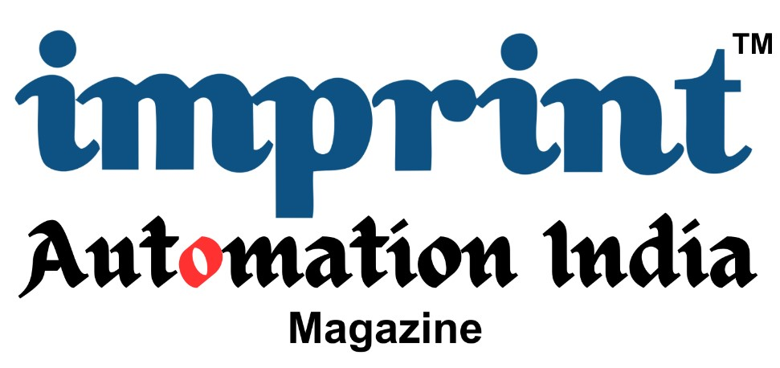
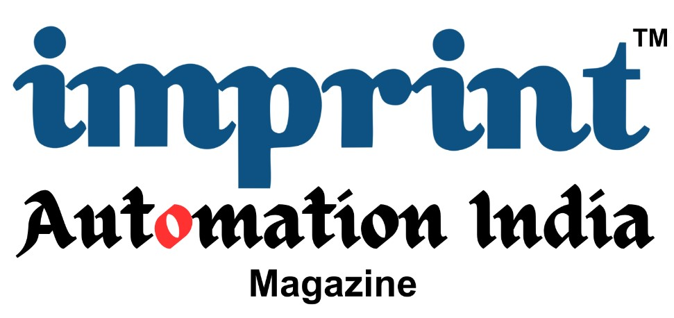

Imprint/PARA Tech Webinar FREE Attendance
Date: 4 June 2024
Time: 4 ‘o’ clock
Format: Open session- Discussion with online attendees on aspects of industry 4.0 and learning of various modules comprising a real-world curriculum.
Benefits: Attending this session will give aspiring automation engineers a broad view of different subjects of learning involved in becoming a digital manufacturing expert which is the need of the hour.
Outcome: After this webinar you will be in a much better position to decide to join and institute offering such courses.
Purpose: Expanding Knowledge of industrial automation, robotics and artificial intelligence.
Moderator:TBD
Topic:Digital Manufacturing and Smart Factories- Prepare for industry 4.0
Modules:Industry 4.0, Digital Manufacturing, Electronics and Mechatronics, AI, ML, Analytics, IoT, Digital Twin, AR, VR, MR, Haptics, Robotics and Autonomous Systems, Additive Manufacturing, Design For Additive Manufacturing, Cyber Security.

 
